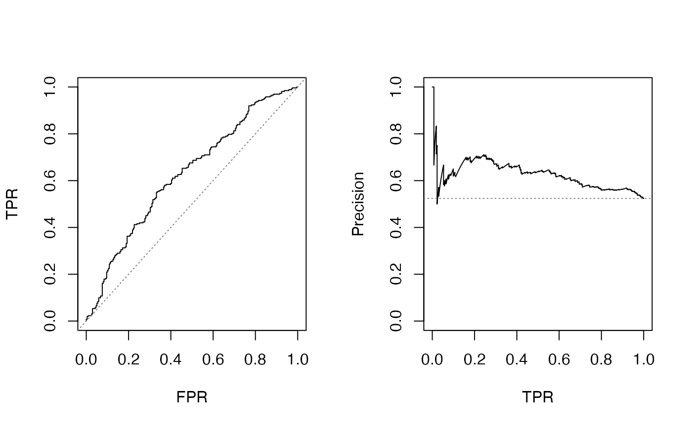

R/mcmcRocPrc-methods.R, R/mcmcRocPrc.R
mcmcRocPrc.RdGenerate ROC and Precision-Recall curves after fitting a Bayesian logit or
probit regression using rstan::stan(), rstanarm::stan_glm(),
R2jags::jags(), R2WinBUGS::bugs(), MCMCpack::MCMClogit(), or other
functions that provide samples from a posterior density.
# S3 method for mcmcRocPrc print(x, ...) # S3 method for mcmcRocPrc plot(x, n = 40, alpha = 0.5, ...) # S3 method for mcmcRocPrc as.data.frame( x, row.names = NULL, optional = FALSE, what = c("auc", "roc", "prc"), ... ) mcmcRocPrc(object, curves = FALSE, fullsims = FALSE, ...) # S3 method for default mcmcRocPrc(object, curves, fullsims, yvec, ...) # S3 method for jags mcmcRocPrc( object, curves = FALSE, fullsims = FALSE, yname, xnames, posterior_samples, ... ) # S3 method for rjags mcmcRocPrc(object, curves = FALSE, fullsims = FALSE, yname, xnames, ...) # S3 method for runjags mcmcRocPrc(object, curves = FALSE, fullsims = FALSE, yname, xnames, ...) # S3 method for stanfit mcmcRocPrc(object, curves = FALSE, fullsims = FALSE, data, xnames, yname, ...) # S3 method for stanreg mcmcRocPrc(object, curves = FALSE, fullsims = FALSE, ...) # S3 method for brmsfit mcmcRocPrc(object, curves = FALSE, fullsims = FALSE, ...) # S3 method for bugs mcmcRocPrc( object, curves = FALSE, fullsims = FALSE, data, xnames, yname, type = c("logit", "probit"), ... ) # S3 method for mcmc mcmcRocPrc( object, curves = FALSE, fullsims = FALSE, data, xnames, yname, type = c("logit", "probit"), force = FALSE, ... )
| x | a |
|---|---|
| ... | Used by methods |
| n | plot method: if `fullsims = TRUE`, how many sample curves to draw? |
| alpha | plot method: alpha value for plotting sampled curves; between 0 and 1 |
| row.names | see [base::as.data.frame()] |
| optional | see [base::as.data.frame()] |
| what | which information to extract and convert to a data frame? |
| object | A fitted binary choice model, e.g. "rjags" object
(see |
| curves | logical indicator of whether or not to return values to plot
the ROC or Precision-Recall curves. If set to |
| fullsims | logical indicator of whether full object (based on all MCMC
draws rather than their average) will be returned. Default is |
| yvec | A |
| yname | ( |
| xnames | ( |
| posterior_samples | a "mcmc" object with the posterior samples |
| data | the data that was used in the `stan(data = ?, ...)` call |
| type | "logit" or "probit" |
| force | for MCMCpack models, suppress warning if the model does not appear to be a binary choice model? |
Returns a list with length 2 or 4, depending on the on the "curves" and "fullsims" argument values:
"area_under_roc": numeric(); either length 1 if fullsims = FALSE, or
one value for each posterior sample otherwise
"area_under_prc": numeric(); either length 1 if fullsims = FALSE, or
one value for each posterior sample otherwise
"prc_dat": only if curves = TRUE; a list with length 1 if
fullsims = FALSE, longer otherwise
"roc_dat": only if curves = TRUE; a list with length 1 if
fullsims = FALSE, longer otherwise
If only the average AUC-ROC and PR are of interest, setting
curves = FALSE and fullsims = FALSE can greatly speed up calculation
time. The curve data (curves = TRUE) is needed for plotting. The plot
method will always plot both the ROC and PR curves, but the underlying
data can easily be extracted from the output for your own plotting;
see the documentation of the value returned below.
The default method works with a matrix of predicted probabilities and the vector of observed incomes as input. Other methods accommodate some of the common Bayesian modeling packages like rstan (which returns class "stanfit"), rstanarm ("stanreg"), R2jags ("jags"), R2WinBUGS ("bugs"), and MCMCpack ("mcmc"). Even if a package-specific method is not implemented, the default method can always be used as a fallback by manually calculating the matrix of predicted probabilities for each posterior sample.
Note that MCMCpack returns generic "mcmc" output that is annotated with
some additional information as attributes, including the original function
call. There is no inherent way to distinguish any other kind of "mcmc"
object from one generated by a proper MCMCpack modeling function, but as a
basic precaution, mcmcRocPrc() will check the saved call and return an
error if the function called was not MCMClogit() or MCMCprobit().
This behavior can be suppressed by setting force = TRUE.
Beger, Andreas. 2016. “Precision-Recall Curves.” Available at SSRN: http://dx.doi.org/10.2139/ssrn.2765419
# load simulated data and fitted model (see ?sim_data and ?jags_logit) data("jags_logit") # using mcmcRocPrc fit_sum <- mcmcRocPrc(jags_logit, yname = "Y", xnames = c("X1", "X2"), curves = TRUE, fullsims = FALSE) fit_sum#> mcmcRocPrc object #> curves: TRUE; fullsims: FALSE #> AUC-ROC: 0.627 #> AUC-PR: 0.621# Equivalently, we can calculate the matrix of predicted probabilities # ourselves; using the example from ?jags_logit: library(R2jags) data("sim_data") yvec <- sim_data$Y xmat <- sim_data[, c("X1", "X2")] # add intercept to the X data xmat <- as.matrix(cbind(Intercept = 1L, xmat)) beta <- as.matrix(as.mcmc(jags_logit))[, c("b[1]", "b[2]", "b[3]")] pred_mat <- plogis(xmat %*% t(beta)) # the matrix of predictions has rows matching the number of rows in the data; # the column are the predictions for each of the 2,000 posterior samples nrow(sim_data)#> [1] 500#> [1] 500 2000# now we can call mcmcRocPrc; the default method works with the matrix # of predictions and vector of outcomes as input mcmcRocPrc(object = pred_mat, curves = TRUE, fullsims = FALSE, yvec = yvec)#> mcmcRocPrc object #> curves: TRUE; fullsims: FALSE #> AUC-ROC: 0.627 #> AUC-PR: 0.621